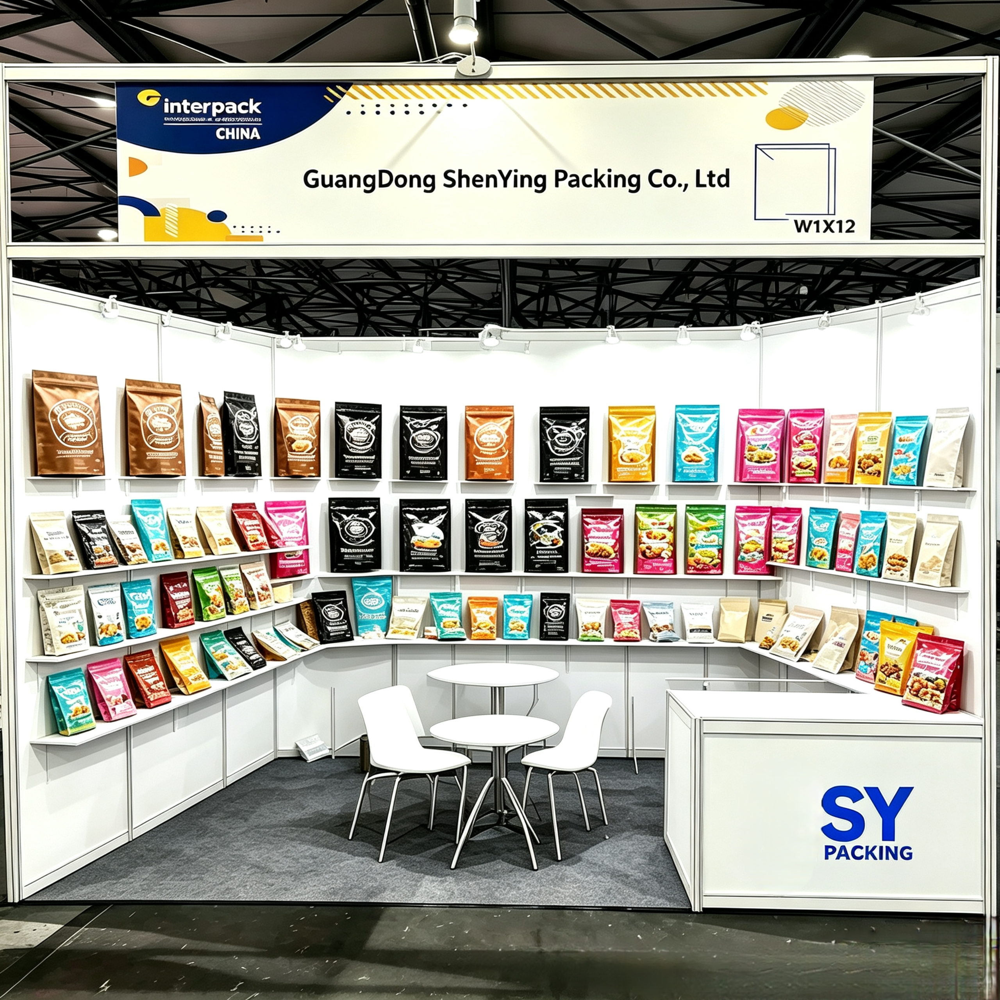

Meet Shenying Packing at Interpack Shanghai 2026: Discover Next-Gen Sustainable & High-Barrier Packaging

We are excited to announce our official participation in Interpack Shanghai 2026, held from November 16 to November 18, 2026!
As one of the leading events for the global processing and packaging industry, Interpack Shanghai brings together top industry innovators. Shenying Packing warmly invites all global partners, buyers, and brand owners to visit us at Booth W1X12 to explore our comprehensive range of high-performance flexible packaging solutions.
Pioneering Sustainable & High-Performance Packaging Solutions
In response to tightening global environmental standards and evolving market demands, Shenying Packing continues to lead with innovative, reliable, and cost-effective packaging engineered for diverse industries—including food, coffee, pet food, and personal care.
At Booth W1X12, our technical and export team will showcase:
- 100% Mono-Material Recyclable Pouches: Advanced mono-PE and mono-PP structures (RIC 4 & RIC 5 compliant) engineered to deliver high barrier protection while enabling full circular recyclability.
- Specialty Food & Coffee Bags: High-barrier multi-layer laminates (including matte PET/AL/PE) featuring extreme moisture (WVTR) and oxygen (OTR) protection, integrated with one-way degassing valves and resealable zippers.
- Personal Care & Spout Pouches: Durable, leak-proof, and custom-finished pouches tailored for liquid, gel, and cosmetic formulations.
- Flexible Order Agility: Supporting both high-volume OEM/ODM production and low-MOQ digital printing options with zero plate fees for quick market testing.
Connect with Our Packaging Experts
Whether you are looking to lower your carbon footprint, optimize supply chain lead times, or upgrade your product's retail shelf appeal, our team is on-site to provide customized packaging advice and live material sample kits.
If you are attending Interpack Shanghai 2026, stop by Booth W1X12 to discuss your upcoming packaging projects!
Attending Interpack Shanghai? Let's connect!
Our team is ready to discuss your packaging needs and share live material samples.
📧 Email: may.lee@shenyingpacking.com
💬 WhatsApp: +86 13424643780